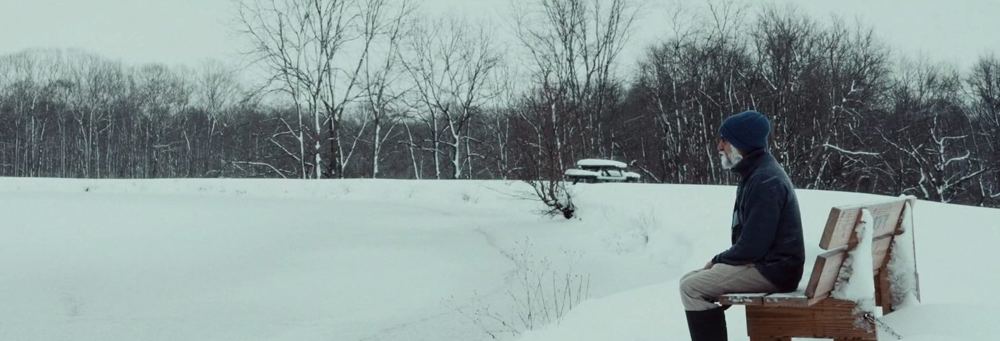
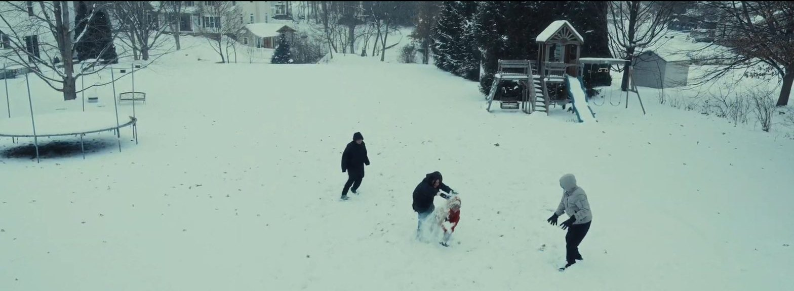
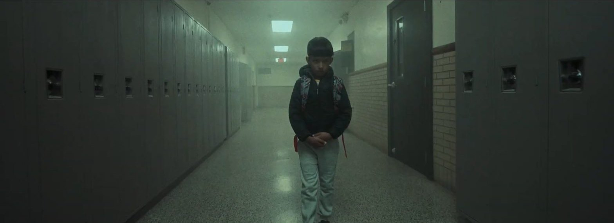
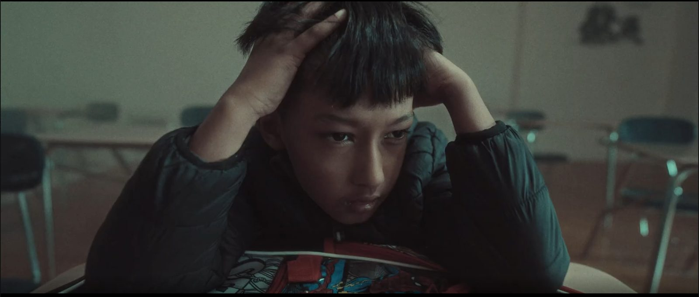
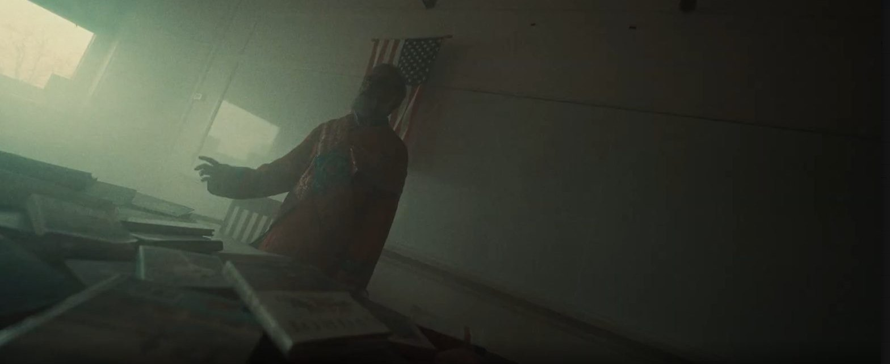

Synopsis劇情簡介
An eight-year-old boy in a quiet Midwestern town begins to carry the unspoken memories of his grandparents’ forced displacement from Bhutan, as renewed fears of deportation force his family to confront a past they tried to bury. Young Ishir manifests the family’s suppressed trauma through his body, dreams and behaviour, as three generations of a Nepali-speaking Bhutanese refugee family face what they never spoke of.
在寧靜的美國中西部小鎮，八歲男孩開始承載祖父母被迫離開不丹、從未說出口的記憶；當被驅逐出境的恐懼再度籠罩，全家不得不面對他們試圖埋葬的過去。小男孩 Ishir 的身體、夢境與行為成了家族壓抑創傷的出口，三代尼泊爾語系不丹難民終於直視那些從未被言說的事。
The Gotham Film & Media Institute — Fiscal SponsorshipCrew of 100+
← All films回到所有電影




